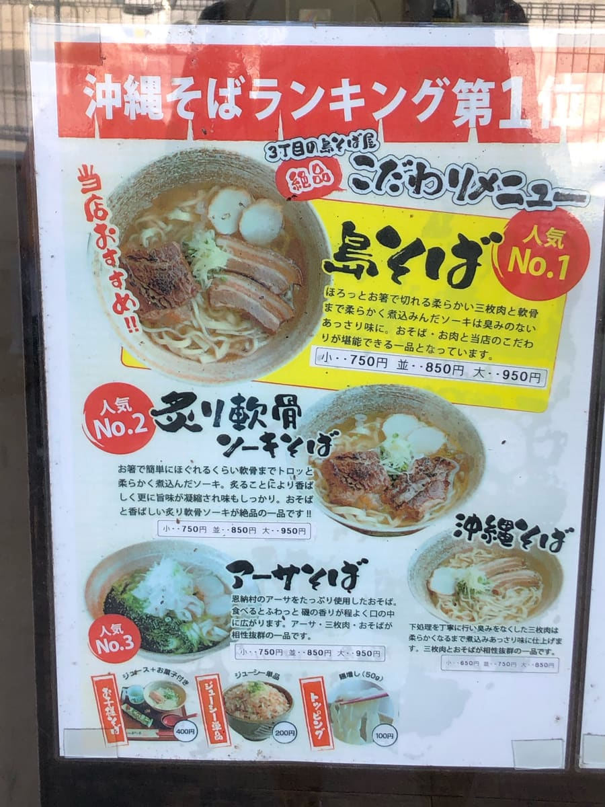
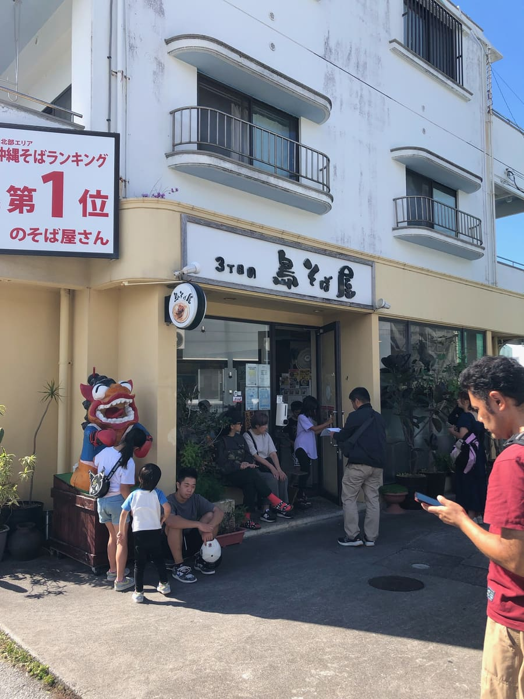
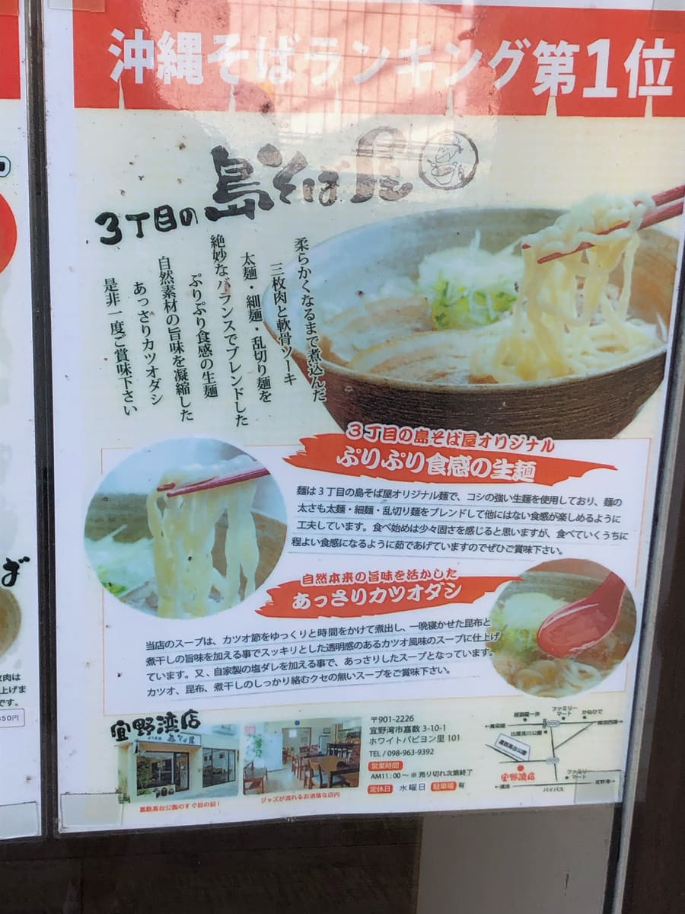
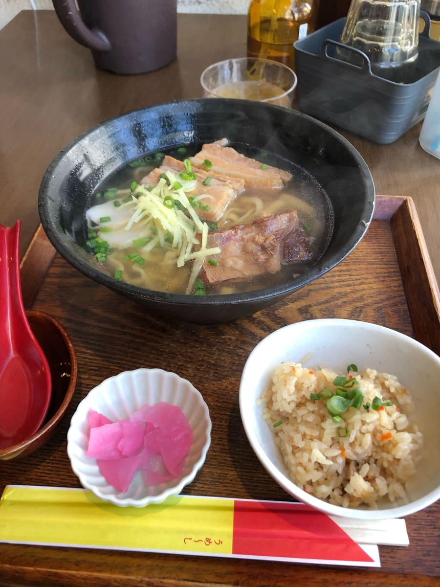

It was featured in the “Horiemon 'Adult Playground' Nationwide Map” (paid), and after watching it I went to eat there right away in July 2022 lol
I've still only been to a fraction of the Okinawa soba shops on the main island of Okinawa, nowhere near conquering them all, but I think this is the most delicious Okinawa soba I've had so far. As expected of a recommendation from the gourmet Mr. Horie ☺
I'd heard there would be a line, so after enjoying my hobby of surfing first thing in the morning at the Suicide Cliff point in Itoman City, I arrived around 10 o'clock even though the opening time was 11 ☺ Naturally, at that hour I was easily the first one there.
However, there was a reception list placed at the shop entrance, and some people wrote down a reservation and then left the shop for a while, so I hurriedly put my name on the reception list too.
Right before the 11 o'clock opening time, customers started lining up. As expected, there are a lot of tourists. *The shop has no parking lot. There is coin parking in front of the shop.


When I went inside, “BUNBUN soba,” whose name resembles the shop's name, was being recommended as the No.1 most popular, so I ordered it.

First, a sip of the soup. The bonito-based broth really comes through and it's delicious. The moment I drank it, it was a deliciousness no shop before had. The noodles are thin and straight. There are four toppings (braised pork belly (sanmai-niku), makanai meat, soft-bone pork ribs (nankotsu soki), and seared soft-bone pork ribs), and all of them are well-seasoned and the best lol. I thought the balance of soup, noodles, and toppings was the best of all the Okinawa soba shops I've eaten at so far.

Rating (14/15): Wow, it seems the owner is from mainland Japan, and the shop's name seems to come from his own name; apparently he opened the shop after training at a famous Okinawa soba shop. I'm looking forward to seeing whether an Okinawa soba shop will ever come along that I think surpasses this deliciousness.
Noodles: ★★★★☆
Soup: ★★★★★
Toppings: ★★★★★